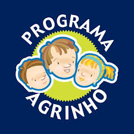

O que é o Agrinho?
O Agrinho é um programa educacional brasileiro voltado para crianças e adolescentes, desenvolvido pelo SENAR (Serviço Nacional de Aprendizagem Rural) em parceria com entidades como o Sistema FAEP (Federação da Agricultura do Estado do Paraná) e o Instituto Brasileiro de Florestas (IBF).
Este programa tem como objetivo principal promover a educação no campo, abordando temas como agricultura familiar, preservação ambiental, saúde, alimentação saudável, cidadania e cooperação. Ele é implementado principalmente em escolas rurais, mas também alcança escolas urbanas, buscando sensibilizar os alunos para questões relacionadas ao desenvolvimento sustentável e ao meio rural.
O Agrinho promove a realização de atividades práticas, projetos educativos, concursos e premiações, envolvendo alunos, professores, pais e comunidades. É uma iniciativa importante para valorizar o meio rural e desenvolver uma consciência crítica e responsável nas novas gerações em relação ao ambiente em que vivem.

O Agrinho é uma iniciativa que merece destaque por diversos motivos positivos:
- Educação Holística: Promove uma educação integrada, abordando temas essenciais como agricultura, meio ambiente, saúde e cidadania, proporcionando uma visão ampla e interdisciplinar aos alunos.
- Conscientização Ambiental e Rural: Estimula a conscientização sobre a importância da preservação ambiental e da sustentabilidade rural desde cedo, formando cidadãos mais responsáveis e comprometidos com o futuro do planeta.
- Inclusão e Participação: Envolve escolas públicas e privadas, alcançando um grande número de estudantes e promovendo a inclusão social através do acesso igualitário ao conhecimento e à participação no concurso.
- Estímulo à Criatividade e Inovação: Incentiva os alunos a desenvolverem projetos criativos e inovadores, buscando soluções para problemas locais e globais, o que contribui para o desenvolvimento de habilidades como pensamento crítico e resolução de problemas.
- Valorização da Agricultura Familiar: Reconhece e valoriza o papel fundamental da agricultura familiar na segurança alimentar e no desenvolvimento rural sustentável, promovendo o respeito pela cultura e pelo trabalho dos agricultores.
- Integração Escola-Comunidade: Fortalece a relação entre escola, família e comunidade, incentivando a colaboração e o engajamento em ações educativas e sustentáveis.
- Formação de Educadores: Oferece capacitações e materiais educativos para professores e gestores escolares, contribuindo para a melhoria da qualidade do ensino e para a disseminação de práticas educativas inovadoras.
- Impacto Social Positivo: Tem um impacto positivo nas comunidades ao promover a conscientização sobre questões locais e globais, inspirando mudanças de comportamento e ações que beneficiam o meio ambiente e a sociedade como um todo.
- Reconhecimento e Premiação: Reconhece o esforço e a dedicação dos participantes através da premiação de projetos de destaque, incentivando o aprendizado contínuo e o comprometimento com causas relevantes.
- Sustentabilidade a Longo Prazo: Contribui para a construção de um futuro mais sustentável ao cultivar valores de respeito pelo meio ambiente, pelo trabalho no campo e pela vida comunitária desde a infância.
Esses aspectos fazem do Agrinho não apenas um concurso educacional, mas uma plataforma transformadora que prepara os jovens para serem agentes de mudança positiva em suas comunidades e no mundo.